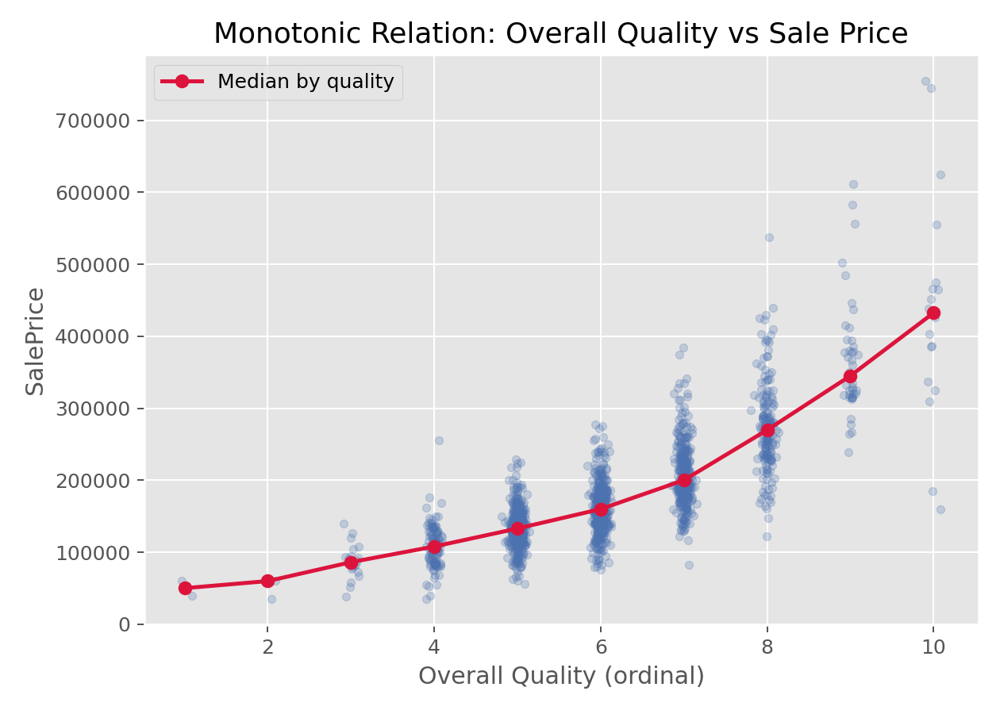

描述统计与统计推断 · 02·11
Spearman秩相关
Spearman Rank Correlation
Spearman秩相关（Spearman Rank Correlation）
§1
方法概览
1.1 定义
Spearman 秩相关用两个变量各自的秩来衡量单调关联强度，适合非正态、含异常值或等级型数据。
1.2 它主要解决什么问题
- 研究问题：两个变量是否呈单调上升或下降关系。
- 适用任务：连续变量或等级变量的相关性分析。
- 常见医学场景：评分量表与连续指标之间的关联、生物标志物与疾病严重程度的单调关系。
1.3 直觉理解
先把两个变量都换成“名次”，再看两个名次是不是一起升高或一起降低。只要关系大体单调，即使不是直线，Spearman 也能识别。
§2
数学形式
2.1 核心公式
$$ \begin{aligned} r_s &= \operatorname{Corr}(\operatorname{rank}(X), \operatorname{rank}(Y)) \\ &= 1 - \frac{6\sum_{i=1}^n D_i^2}{n(n^2 - 1)} \quad \text{(无 ties 时)} \end{aligned} $$
2.2 参数或统计量含义
- $R_i,S_i$：$X_i,Y_i$ 的秩。
- $D_i=S_i-R_i$：秩差。
- $r_s$：Spearman 秩相关系数，范围在 $[-1, 1]$。
2.3 关键假设
- 观测独立。
- 数据至少可排序。
- 关注的是单调关系，不要求线性关系。
§3
数据形式与输入输出
3.1 适合的数据形式
- 自变量类型：连续型或等级型。
- 因变量类型：连续型或等级型。
- 数据结构：成对观测。
- 是否适合高维数据：可逐对计算，但高维矩阵需注意多重检验。
- 是否适合缺失较多数据：可用完整案例或明确缺失策略。
- 是否适合删失数据：通常不直接适用。
- 是否适合重复测量数据：普通 Spearman 不处理相关结构。
3.2 示例表格
Spearman 相关特别适合“有序等级变量 + 连续变量”或者“两个不满足线性关系但大致单调的变量”。例如房价数据里：
| Id | OverallQual | GrLivArea | SalePrice |
|---|---|---|---|
| 1 | 7 | 1710 | 208500 |
| 2 | 6 | 1262 | 181500 |
| 3 | 7 | 1786 | 223500 |
| 4 | 7 | 1717 | 140000 |
| 5 | 8 | 2198 | 250000 |
3.3 输入与产出
输入
- 输入数据：两个成对变量。
- 关键变量：$X$、$Y$。
- 需要预处理的内容：对齐成对观测、缺失处理。
产出
- 模型对象/统计结果：相关系数、p 值。
- 参数估计：$r_s$。
- 预测结果：无。
- 不确定性指标：可用 Bootstrap 给区间估计。
§4
适用场景
- 适合：偏态、离群值较多、等级数据、非线性但单调关系。
- 不适合：想要估计线性斜率或控制混杂时。
- 使用前需要特别检查的点：关系是否大致单调、是否存在大量 ties。
§5
实现
常用包：
scipy
import numpy as np
from scipy import stats
x = np.array([1, 2, 3, 4, 5, 6])
y = np.array([2, 3, 4, 4, 6, 8])
res = stats.spearmanr(x, y, alternative="two-sided")
print(res.statistic, res.pvalue)
常用包：
stats
x <- c(1, 2, 3, 4, 5, 6)
y <- c(2, 3, 4, 4, 6, 8)
cor.test(x, y, method = "spearman")
§6
结果如何解释
- 核心结果看什么：相关系数的方向和绝对值大小。
- 每个主要参数如何解释：$r_s>0$ 表示总体上同升，$r_s<0$ 表示总体上反向变化。
- 临床或医学意义如何表达：要同时结合散点图判断关系形态。
- 常见误读：相关不代表因果；相关系数高也不一定是线性关系。
§7
推荐可视化
- 散点图加平滑曲线。
- 秩转换后的散点图。
- 分组着色散点图。
7.1 图像示例
下图展示房屋整体质量与售价之间的单调关系，是 Spearman 秩相关非常典型的应用场景。

§8
优势、局限与常见坑
优势
- 对异常值更稳健。
- 适合等级数据。
- 能捕捉单调但非线性的关系。
局限
- 不能处理混杂。
- 不能刻画复杂非单调关系。
- ties 较多时效率和解释会受影响。
常见坑
- 把单调相关解读成线性关系。
- 忽视潜在分层或混杂。
- 只报系数不看散点图。
§9
与相近方法的区别
- 和 Pearson 相关的区别：Pearson 强调线性，Spearman 强调单调。
- 和 Kendall tau 的区别：Kendall 更偏向一致性解释，Spearman 更像秩上的 Pearson。
- 应该如何选择：等级数据或偏态明显时优先考虑 Spearman。
§10
医学研究中的典型应用
- 量表评分与实验室指标的关联。
- 药敏结果与病理等级的关联。
- 生物标志物与病情严重程度排序关系。
§11
相关方法
§12
参考资料
- Conover WJ. Practical Nonparametric Statistics. 3rd ed. Wiley; 1999.
- SciPy Developers.
scipy.stats.spearmanr. SciPy API Reference. https://docs.scipy.org/doc/scipy/reference/generated/scipy.stats.spearmanr.html （访问日期：2026-07-02） - R Core Team.
cor.test. R Manual. https://stat.ethz.ch/R-manual/R-devel/library/stats/html/cor.test.html （访问日期：2026-07-02）
— 黑盒词典 · 02·11 —